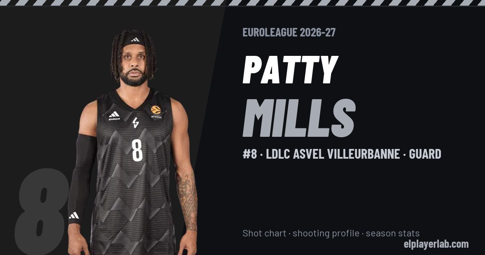

LDLC ASVEL Villeurbanne · Euroleague 2026-27
Patty Mills
#8 · Guard · LDLC ASVEL Villeurbanne · 2026-27 · 4 games · 16.8 pts · 0.8 reb · 2.8 ast a game

- Number
- 8
- Position
- Guard
- Height
- 181 cm
- Weight
- 82 kg
- Born
- 1988-08-11
- Country
- Australia
Career
- LDLC ASVEL 2026-2027
- La Laguna Tenerife 2026
- Los Angeles Clippers (NBA) 2024-2025
- Utah Jazz (NBA) 2024-2025
- Miami Heat (NBA) 2023-2024
- Atlanta Hawks (NBA) 2023-2024
- Brooklyn Nets (NBA) 2021-2022
- San Antonio Spurs (NBA) 2011-2012
- Xinjiang Flying Tigers 2011-2012
- Melbourne Tigers 2011
- Idaho Stampede (loan) 2009-2010
- Portland Trail Blazers (NBA) 2009-2010
- Saint Mary's (NCAA) 2007-2009
Euroleague Player Lab: shot charts, shooting profiles and season stats for every player, rebuilt after every game.